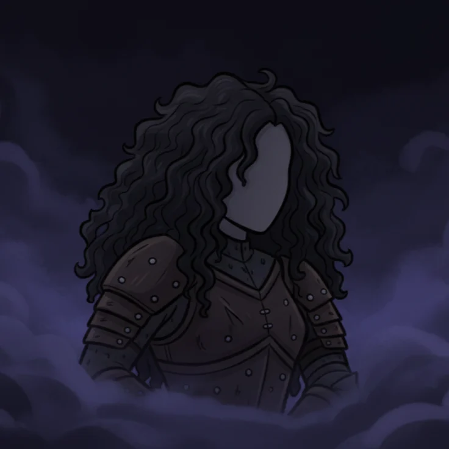
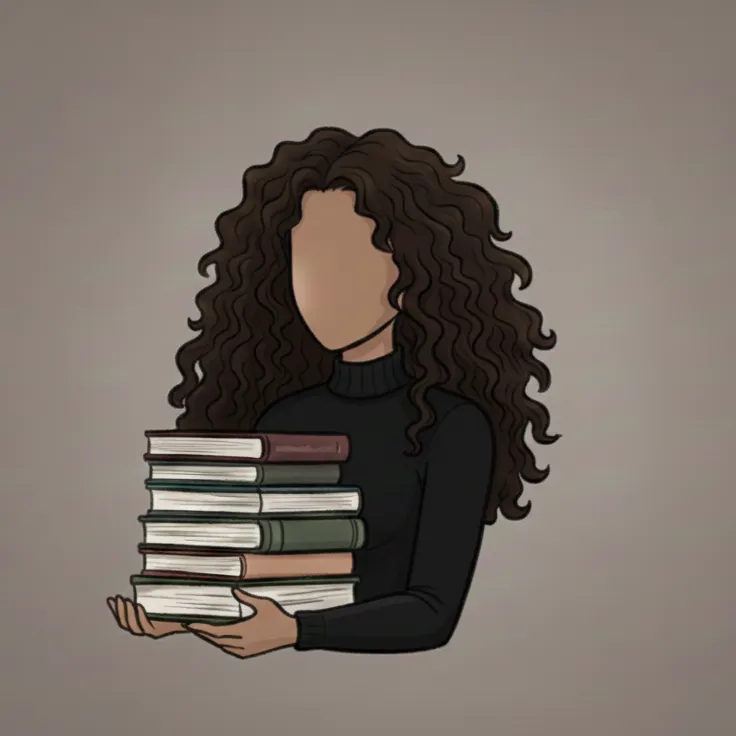
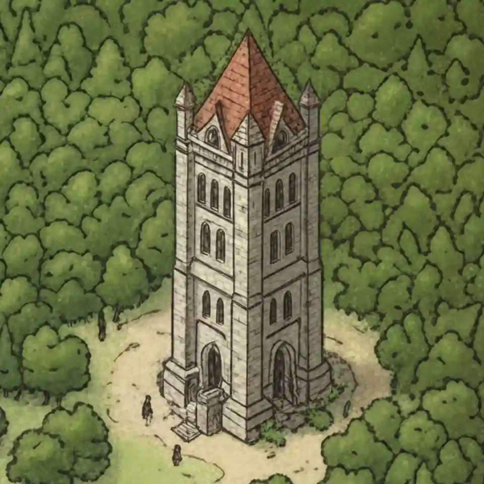

Synopsis
There are wounds that pierce beyond the skin...
There are dreams that do not fade upon waking...
For Nyra Valen, the veil between reality and nightmare shatters the moment she receives her acceptance letter from Sylvaras University. Each night she enters a world of stone and purple, where ghosts whisper her name, and each morning her skin wakes painted with the marks left by the night. Dream or reality?
At Sylvaras, a pair of eyes watches her eyes burdened with a history long forgotten. And a shadow that reeks of pain and corruption is waking, hungry.
Who is she? Two timelines, two identities, but only one truth capable of destroying everything: to defeat the shadow, she must first unravel the enigma of her own reflection. Because the warrior who stalks her in her dreams… wears her very face.
Main Characters


Nyra lives a double life. By day, she is an archaeology student with a promising future. By night, with each dream, she becomes a warrior she does not recognize. Two souls, two bodies, one story, and a shadow threatening to consume both realities. Nyra will have to do the impossible: reconcile with the part of herself she fears the most, before an ancient shadow turns her inner war into the grave of all realities.
The Central Place

The Arubal Tower may look like an ordinary tower, but there is more to it than stone and wood. It is the physical heart of the magical web that connects everything. To understand it, logic alone isn't enough, nor is pure artistry, you must think with the rigidity of a geometer and dream with the freedom of a poet. It will be crucial to understanding everything…